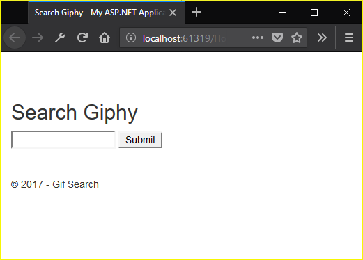
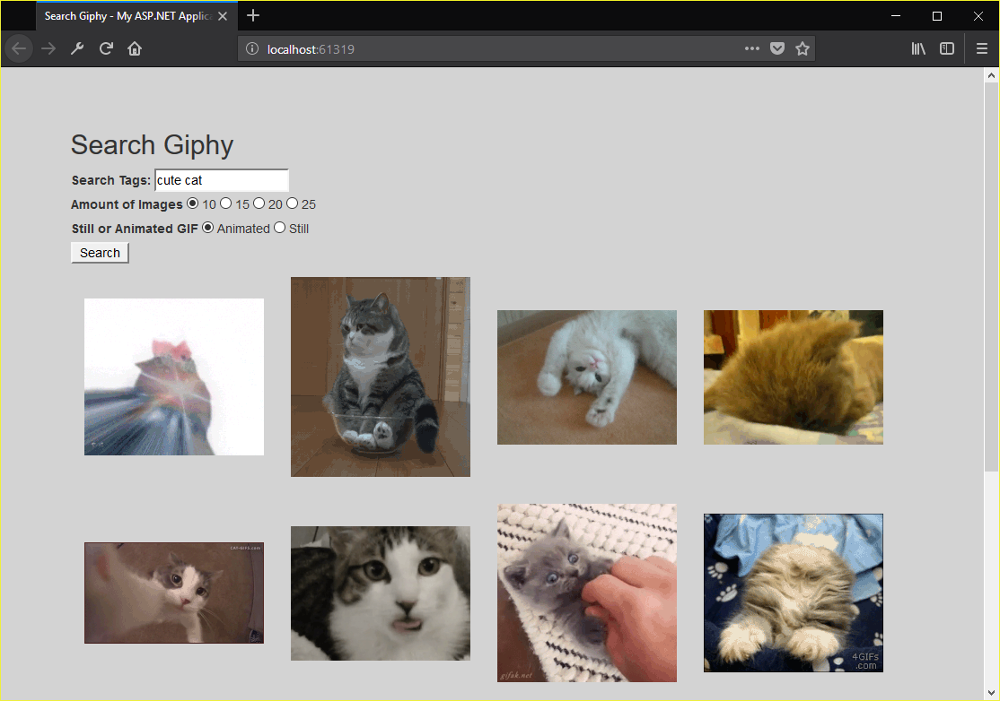

For this assignment we created a webpage that enabled a user to enter search information to search giphy and then be able to load this information onto the page without reloading the page. To be able to load in information we had to use ajax, which would let us query our server and retrieve information without reloading the page. Once we have that working we are to add in some extra attributes for searching, such as limits, whether they're animated or not or searching by rating. After that is all working we have to create a database to log requests that are processed. The purpose of this assignment is to learn how to use ajax as well as how to work with an API
The assignment can be found here
The source code can be found here
As usual the first thing I did was create an empty MVC web application. Next I added a controller and a homepage with a basic layout. To start off the layout needed to be able to take text from the user so I added a basic input element to be able to do that. Once I had that I went to Giphy and created a developer account so that I could get an API key so I can query Giphy for the information I needed. To make sure the key was secure I put it in a .config file outside the git repo and added the following line to the Web.config file
<appSettings file="../../../AppSettingsSecret.config">

We learned in class that this grab the api key from the config file outside of the repo and add it when it's built. This would make it so that we can still use the API key while also keeping it secure so that people can't get it.
Now that I could get search terms from the user and had an api key for giphy I began working on querying the server, and from their querying giphy. Querying the server is where ajax came in handy. The code itself was pretty simple, a type so that ajax knows what http request its doing, dataType so that it knows what to expect back, url to query, and what to do on success and optionally what to do if an error occurs.
$.ajax({
type: "GET",
dataType: "json",
url: query,
success: loadImages,
error: failed
});
I tested that to make sure that data being passed was received correctly, and that any information passed back was also received correctly. After that I began working on querying Giphy. I wasn't sure how I was supposed to send out http requests so after some googling I came across System.Net.Http.HttpClient. I looked at a couple of examples and started to form a query to giphy, and manage to get back some information when I checked our slack page and found out that we could use WebRequest to do this. I looked into WebRequest to see what the difference between it and HttpClient are and found that WebRequest is used for Get and Post requests and HttpClient is used for other ones. Knowing this I switched over to WebRequest and managed to get a json object back from Giphy.
string qurl = "http://api.giphy.com/v1/gifs/search?q=" + q + "&api_key=" + APIKey;
WebRequest request = WebRequest.Create(qurl);
HttpWebResponse resp = (HttpWebResponse)request.GetResponse();
Stream dataStream = resp.GetResponseStream();
StreamReader reader = new StreamReader(dataStream);
string gifData = reader.ReadToEnd();
reader.Close();
resp.Close();
dataStream.Close();
The above code shows how I took the text from the user, which is q in the qurl variable, and sent it to Giphy and parsed the data into a string so that it could be parsed into a JSON object. Grabbing the data from Giphy was relatively easy, it did take me a few hours to get the request to work properly but it wasn't as hard as parsing the JSON data. Parsing the string into a JSON object wasn't where things got hard, from what I could gather that's how JSON objects are usually passed around so there was a class that had a method that converted it. Trimming out the unneeded data was where things got confusing. The Newtonsoft.json class provides a lot of functions to manipulate json objects, both serialzing and deserializing them. I used this tutorial as a basis for what to do. Most of the code from the tutorial worked and I managed to get the json object passed back to the view and was able to load the data. However what I passed back was an array of groups of images with all the data, instead of just the url which was all that I needed. After hours and hours of digging I came up with the following code, which managed to get me an array of urls as a json object.
JObject gifs = JObject.Parse(gifData);
IList data = gifs["data"].Children().Values("images").Values(gifType).ToList();
IList imagesData = new List();
foreach(JToken gif in data)
{
ImageData image = gif.ToObject();
imagesData.Add(image);
}
string gifReturn = JsonConvert.SerializeObject(imagesData, Formatting.Indented);
return Json(gifReturn, JsonRequestBehavior.AllowGet);
This code comes right after the code above it where I grabbed the data from json and converted it to a string. The first line converts the string to a json object which is simple enough to get and pass back to the view, but to pull out the data athat I needed I would have to use the second line to get the specific image. gifs["data"].Children() returns an array of all the children of the data array, but the json data that giphy returns has a field called images that contains a bunch of fields for each type of gif. I first tried to use .Children() to go into the images field but that didn't work so I had to comb through the Newtonsoft.json methods until I found the .Values() method that does what I need, go into an the images field and return its children as an array. The other benefit of this is that I don't have to create models for of the data that giphy returns, because to pull out the data and convert it to back to json I would have to do that. Since I was able to go down into the lowest level all I had to was create a model that had the fields I needed, which for this was ImageData which just had a field called url.
Now that I had a json object that contained an array of image urls I had to load them on onto the page and add some css to style it. To add them to the page I used jquery to append the url in an img tag to the gif-wrapper div and then I added some css to space out the images and gave the background a new color. With the images now getting displayed I went on to adding a couple of extra search options, specifically the ability to specify how many images you want returned, 10, 15, 20, 25, and the ability to choose from animated or still gifs.
The last thing to do was create a request log database. The database itself wasn't hard to make, it just had a single table that had fields for search terms, date requested on, the User's browser and their IP address. To get the information I used the Request class, which had a field called UserAgent which contained the user browser data and a field called UserHostAddress which contained their address.
private void LogRequest(string q)
{
Request tempLog = new Request
{
SearchTerms = q,
RequestedOn = DateTime.Now,
UserBrowser = Request.UserAgent,
UserAddress = Request.UserHostAddress
};
db.Requests.Add(tempLog);
db.SaveChanges();
}